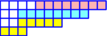

Two Murnaghan-Nakayama Rules in Schubert CalculusAndrew Morrison and Frank Sottile | |||
|
Murnaghan-Nakayama rule in quantum cohomology of Grassmannians: p4*σ(3,2,1) = σ(3,3,3,2) + σ(4,4,3) - qσ(3) - qσ(1,1,1) |
|||
|
The Murnaghan-Nakayama rule expresses the product of a Schur function with a Newton power sum in the basis of Schur functions. We establish a version of the Murnaghan-Nakayama rule for Schubert polynomials and a version for the quantum cohomology ring of the Grassmannian. These rules compute all intersections of Schubert cycles with tautological classes coming from the Chern character. |
|||
|
 | |||